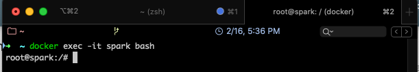
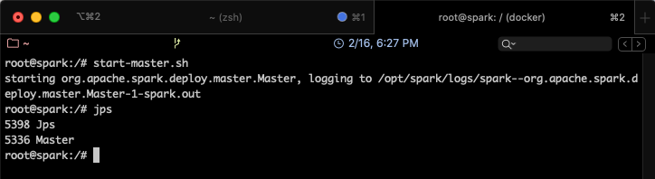
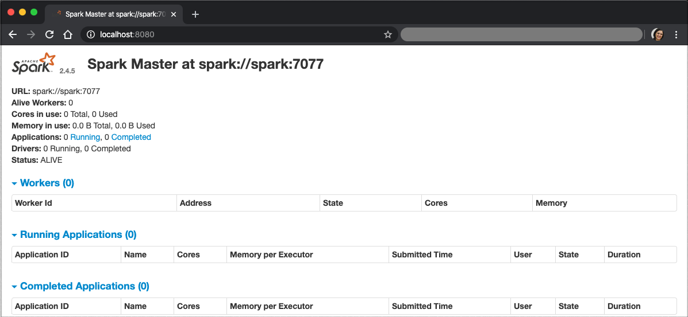
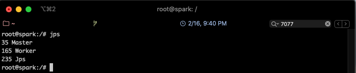
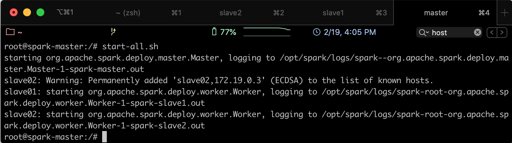
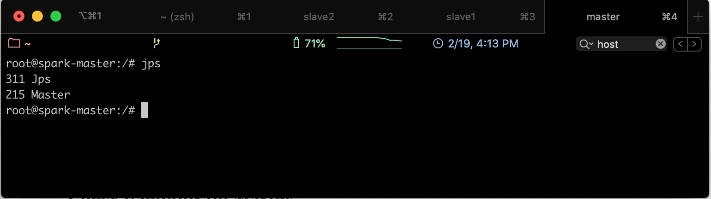
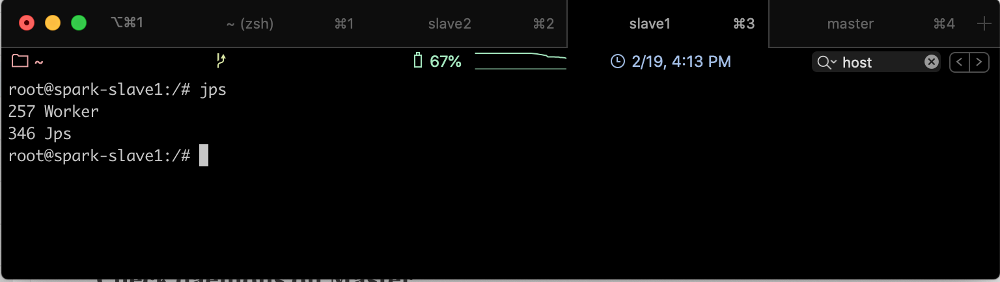

Partie 3 - Installation de Spark
Installation de Spark sur un seul Noeud
Pour installer Spark, nous allons utiliser des contenaires Docker. Docker nous permettra de mettre en place un environnement complet, entièrement portable, sans rien installer sur la machine hôte, pour utiliser Spark de façon uniforme grâce aux lignes de commande.
Nous allons suivre les étapes suivantes pour installer l'environnement Spark sur une machine ubuntu.
Étape 1 - Télécharger l'image de base
Avant de suivre les étapes suivantes, il faut commencer par installer Docker. Suivre les étapes se trouvant dans le lien suivant, suivant votre système d'exploitation:
https://docs.docker.com/install/
Nous avons choisi Ubuntu comme environnement cible pour notre contenaire Docker. Nous commençons donc par télécharger l'image Ubuntu à partir de Docker Hub, avec la commande suivante:
1 | docker pull ubuntu |
Nous allons ensuite créer un contenaire à partir de l'image téléchargée.
1 | docker run -itd -p 8080:8080 --name spark --hostname spark ubuntu |
Nous avons lancé un nouveau contenaire intitulé spark à partir de la machine ubuntu, en exposant sur le localhost son port 8080, pour pouvoir accéder à sa WebURL.
On pourra vérifier que la machine est bien démarrée en utilisant:
1 | docker ps |
On devrait obtenir un résultat semblable au suivant:

Pour se connecter à la machine et la manipuler avec les lignes de commandes, utiliser:
1 | docker exec -it spark bash |
Le résultat sera comme suit:

Attention
Ces étapes sont faites une seule fois, à la première création de la machine. Si vous voulez relancer une machine déjà créée, suivre les étapes suivantes:
- Vérifier que la machine n'est pas déjà démarrée. Pour cela, taper la commande suivante:
1
docker ps
-
Si vous retrouvez le contenaire dans la liste affichée, vous pouvez exécuter la commande
docker exec...présentée précédemment. -
Sinon, vérifier que le contenaire existe bien, mais qu'il est juste stoppé, grâce à la commande:
1
docker ps -a
-
Une fois le contenaire retrouvé, le démarrer, simplement en tapant la commande suivante:
1
docker start spark
Le contenaire sera lancé.
Étape 2 - Installer Java
Afin d'installer Java sur la machine, commencer par mettre à jour les packages systèmes de Ubuntu:
1 2 | apt update apt -y upgrade |
Installer ensuite la version par défaut de Java:
1 | apt install default-jdk |
Vérifier la version de Java que vous venez d'installer:
1 | java -version |
Étape 3 - Installer Scala
Installer Scala :
1 | apt install scala |
Étape 4 - Télécharger Spark
Pour installer Spark sur la machine docker, utiliser la commande suivante:
1 2 | apt install curl curl -O https://archive.apache.org/dist/spark/spark-2.4.5/spark-2.4.5-bin-hadoop2.7.tgz |
La version stable actuelle est 2.4.5, mais vous pouvez télécharger la version de votre choix. Vous retrouverez les liens de téléchargement de toutes les versions ICI.
Extraire ensuite le fichier tgz:
1 | tar xvf spark-2.4.5-bin-hadoop2.7.tgz |
Déplacer le dossier obtenu vers le répertoire /opt comme suit:
1 2 | mv spark-2.4.5-bin-hadoop2.7 /opt/spark rm spark-2.4.5-bin-hadoop2.7.tgz |
Étape 5 - Mise en place de l'environnement Spark
Nous devons mettre en place certains paramètres d'environnement pour assurer une bonne exécution de Spark:
- Ouvrir le fichier de configuration bashrc (installer vim si nécessaire avec
apt install vim)
1 | vim ~/.bashrc |
2. Ajouter les lignes suivantes à la fin du fichier (taper
G pour aller à la fin du fichier, puis o pour insérer une nouvelle ligne et passer en mode édition)
1 2 | export SPARK_HOME=/opt/spark export PATH=$PATH:$SPARK_HOME/bin:$SPARK_HOME/sbin |
Quitter l'éditeur en tapant
:wqActiver les changements réalisés en tapant
`source ~/.bashrc
Étape 6 - Démarrer un serveur master en standalone
Il est désormais possible de démarrer un serveur en standalone, en utilisant la commande suivante:
1 | start-master.sh |
Vous pourrez ensuite vérifier que votre serveur est bien démarré en tapant:
jps

Il suffit de plus, d'aller sur le navigateur de votre machine hôte, et d'ouvrir le lien: http://localhost:8080 (après avoir vérifié que rien d'autre ne tourne sur le même port). L'interface Web de Spark s'affichera, comme suit:

On remarque que la fenêtre indique que le spark master se trouve sur spark://spark:7077
Étape 7 - Démarrer un processus Worker
Pour lancer un processus Worker, utiliser la commande suivante:
1 | start-slave.sh spark://spark:7077 |
Un nouveau processus sera lancé, qu'on pourra voir avec jps

Vous pouvez maintenant lancer Spark Shell pour executer des Jobs Spark.
1 | spark-shell |

Installation de Spark sur un cluster
Nous allons maintenant procéder à l'installation de Spark sur un cluster, c'est à dire un ensemble de machines interconnectées, représentées dans notre cas par des contenaires Docker. L'objectif sera donc de créer un réseau de contenaires, installer Spark dessus, et lancer les processus sur les différents contenaires, de façon à obtenir le cluster suivant:
Pour réaliser cela, nous allons nous baser sur le contenaire créé précédemment, dans lequel nous avons installé Java et Spark.
Étape 1 - Installer SSH
- Installer OpenSSH sur la machine :
1
apt install openssh-server openssh-client
- Générer une paire de clefs (quand on vous le demande, valider le chemin par défaut proposé pour enregistrer la paire de clefs):
1
ssh-keygen -t rsa -P "" - Définir la clef générée comme clef autorisée:
1
cp /root/.ssh/id_rsa.pub /root/.ssh/authorized_keys
- Programmer ssh pour qu'il soit lancé au démarrage du contenaire. Pour cela, ajouter les lignes suivantes à la fin du fichier
~/.bashrc:
1
service ssh start
Étape 2 - Configurer Spark
Il faudrait éditer le fichier de configuration spark-env.sh (se trouvant dans le répertoire $SPARK_HOME/conf) pour ajouter les paramètres suivants:
- Créer une copie du template du fichier
spark-env.shet le renommer:
1
cp $SPARK_HOME/conf/spark-env.sh.template $SPARK_HOME/conf/spark-env.sh
- Ajouter les deux lignes suivantes à la fin du fichier
~/.bashrc(n'oubliez pas de le recharger après modification avecsource ~/.bashrc)
1
export SPARK_WORKER_CORES=8
- Créer le fichier de configuration
slavesdans le répertoire$SPARK_HOME/conf:
1
vim $SPARK_HOME/conf/slaves - Ajouter dans le fichier
slavesles noms des contenaires workers (que nous allons créer tout à l'heure):
1 2
spark-slave1 spark-slave2
Vous avez configuré Spark pour supporter deux esclaves (workers ou slaves) en plus du master.
Étape 3 - Créer une image à partir du contenaire
Une fois le contenaire créé et configuré tel que présenté précédemment, nous allons le dupliquer pour en créer un cluster. Mais d'abord, il faut créer une image du contenaire, de façon à l'utiliser pour créer les deux autre contenaires.
Commencer par quitter le noeud spark et retourner vers la machine hôte, en tapant exit.
- Taper la commande suivante pour créer une image à partir du contenaire spark:
1 | docker commit spark spark-image |
commit permet de créer une nouvelle image spark-image à partir du contenaire spark.
Vérifier que spark-image existe bien en tapant: docker images.
Étape 4 - Créer le Cluster
Pour créer le cluster à partir de l'image déjà générée, suivre les étapes suivantes:
-
Supprimer le contenaire spark précédemment créé:
1 2
docker stop spark docker rm spark
-
Créer un réseau qui permettra de connecter les trois noeuds du cluster:
1
docker network create --driver=bridge spark-network - Créer et lancer les trois contenaires (les instructions -p permettent de faire un mapping entre les ports de la machine hôte et ceux du contenaire):
1 2 3 4 5 6 7 8 9 10 11
docker run -itd --net=spark-network -p 8080:8080 --expose 22 \ --name spark-master --hostname spark-master \ spark-image docker run -itd --net=spark-network --expose 22 \ --name spark-slave1 --hostname spark-slave1 \ spark-image docker run -itd --net=spark-network --expose 22 \ --name spark-slave2 --hostname spark-slave2 \ spark-image
- Vérifier que les trois contenaires sont bien créés:
1
docker ps
Vous devriez retrouver la liste des trois contenaires:

Étape 5 - Démarrer les services Spark
Pour démarrer les services spark sur tous les noeuds, utiliser la commande suivante:
1 | start-all.sh |
Vous obtiendrez le résultat suivant:

Pour vérifier que les services sont bien démarrés, aller sur le noeud Master et taper la commande jps, vous trouverez le résultat suivant:

Si on fait la même chose sur un des slaves, on obtiendra le résultat suivant:
